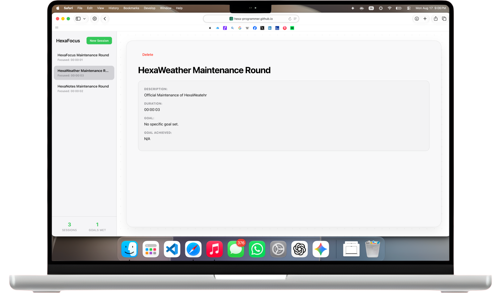

Focus Sessions
Create and start focused work sessions with custom, meaningful titles.
HexaFocus is a minimal focus timer and session tracker built using HTML, CSS, and JavaScript.
It runs entirely in the browser with no backend and uses localStorage for persistence.

Create and start focused work sessions with custom, meaningful titles.
Track your active focus time seamlessly with a real-time, precision timer.
Optionally set a clear goal and mark whether it was achieved during the session.
View your previous sessions along with their duration, descriptions, and results.
Sessions are automatically and securely saved locally using browser localStorage.
HexaFocus relies on a browser-only architecture. Each session is structured as a standalone state object:
{
id: Date.now(),
title: "Session title",
desc: "Optional description",
goal: "Optional goal",
durationSec: 0,
status: "ended",
goalAchieved: true
}To maintain session history without a database, everything is stringified and saved using:
localStorageThis guarantees rapid load times and complete data privacy.
To run HexaFocus locally:
git clone https://github.com/Hexa-Programmer/HexaFocus.git
cd HexaFocus
open index.htmlThis is a personal learning project and will continue to evolve over time.